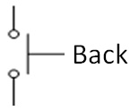
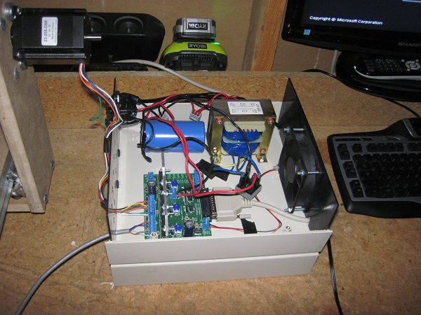

 |
|
CNCI recently finished building my CNC machine (although there's still a lot left to improve). So far I have used it to engrave wood and mill better parts for the machine, but I also plan to use it to etch/drill PCBs and route plastic. Before I started building, I designed and CADed the machine. As you can see, midway through the building process I changed the design from a movable gantry to a movable base. After building the moveable gantry I was upset with the lack of rigidity, so I decided to sacrifice cutting area for more strength. Future plans include remilling many of the parts, and painting them with a clear coat so that moisture does not hurt the MDF. Below is a video of the completed machine, as well as the initial design, and a picture of the electronics. |
